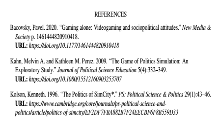

How to Remove URLS from Zotero Bibtex
I’m currently in the process of transitioning my dissertation from LibreOffice into LaTeX because I like pain it’s a lot easier to finagle all of the images and tables while making sure that I’m keeping in-line with the grad school’s style formatting requirements. I’m currently using Zotero to manage all of my citations. I went to just do a cursory check on how my bibliography rendered and here’s what I found:

Yikes! URLS for the webpages for journal articles! While I’m personally pretty ambivalent towards it, that’s not something that style-guideline sticklers are gonna abide. I’d like for it to only export the URL from web sources—blogs, news articles, videos and the like—while nixing the export for others.
Surprisingly, there isn’t an option in the Zotero App for this functionality. I came across this awesome post from vxlabs that provided the code and approach that inspired this post. Their suggestion:
- Go to Preferences | Advanced and click on the “Show Data Directory” button.
- Edit translators/BibTeX.js with your favourite text editor.
- In function doExport(), at around line 2040 in Zotero 3.0.7, change the “for (var field in fieldMap)” loop by adding a single line of code like this:
then provided the following code:
for(var field in fieldMap) {
# only add the following line:
if (field == "url") continue;
if(item[fieldMap[field]]) {
writeField(field, item[fieldMap[field]]);
}
}This fix makes a lot of sense! The code is just saying “hey Zotero. Just go ahead and continue past the url field when writing Bibtex entries.” It was almost perfect for my needs sans one small tick—it also nixed the urls off of webpages!
So in order to make it perfect (that is: in order to make it so that it skips the URLs for everything but the entries coming from webpages), you just got to add this amended text.
for (var field in fieldMap) {
if (field == "url" & item.itemType != "webpage") continue;
if (item[fieldMap[field]]) {
writeField(field, item[fieldMap[field]]);
}The extra bit just tells the exporter “hey! continue on along past the URL field only when the item type isn’t a webpage.” Let’s see how it works!